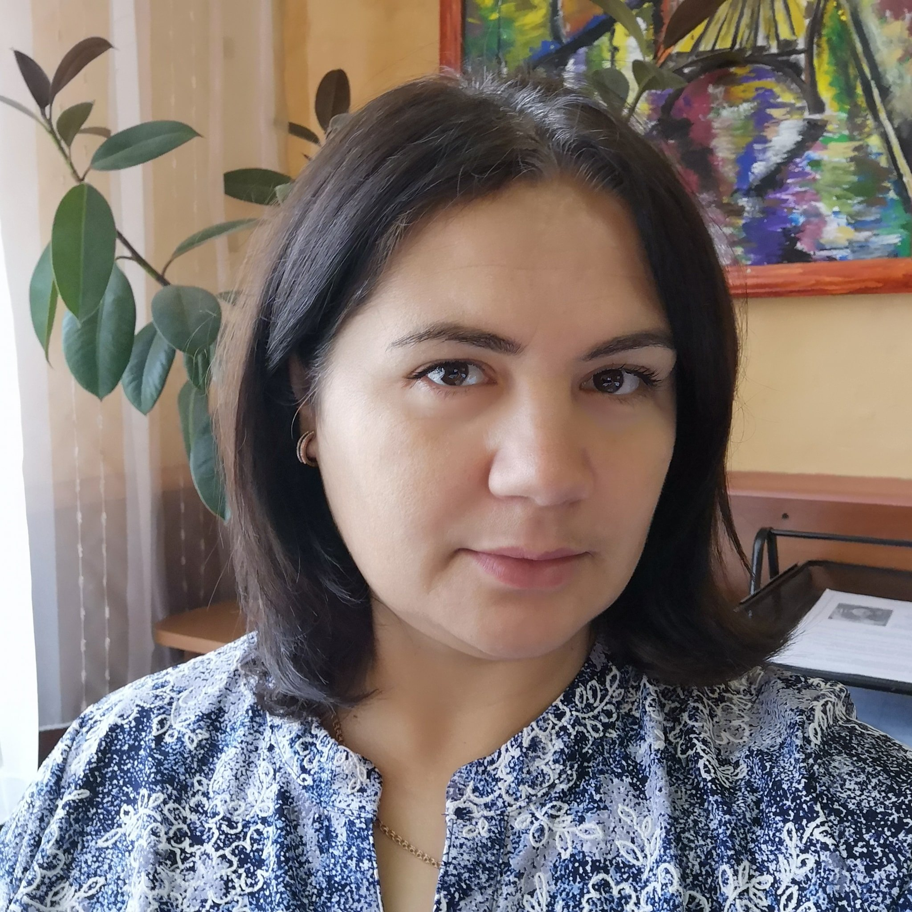

Consiliul Elevilor şi coordonatorul
În afara unei persoane responsabile de activitatea CE din partea echipei manageriale,
directorul instituţiei va numi, dacă este cazul, un profesor coordonator al CE.
Principalele responsabilităţi ale profesorului coordonator includ:
• participarea la şedinţele CE şi ghidarea, consultarea şi informarea consilierilor;
• desfăşurarea activităţilor de instruire şi consolidare a echipei Consiliului;
• asistarea CE în comunicarea cu echipa managerială și corpul profesoral;
• încurajarea profesorilor să invite membrii CE la şedinţele corpului didactic şi vice-versa;
• asigurarea faptului că CE este parte în toate aspectele vieţii instituției, inclusiv la procesele
decizionale;
• asigurarea că subiectele și demersurile CE sunt incluse pe agenda şedinţelor echipei manageriale și a
corpului profesoral;
• monitorizarea şi evaluarea dezvoltării CE împreună cu membrii consilieri.
Ursu Lilia- director adjunct pentru educaţie

Consiliul Elevilor trebuie să activeze în strânsă legătură cu cadrul didactic
coordonator. Acest rol mi-l-am asumat eu, fiind totodată şi dir. adj. pentru ed..
Nu zic deloc că este o muncă uşoară, ba chiar plină de provocări. Aici eşti îndrumătorul lor,
dar nu trebuie să influenţezi deciziile lor pentru că scopul creării acestui consiliu este de a
păstra o strânsă legătură cu administraţia liceului, cu profesorii şi părinţii. CE este organul
reprezentativ al tuturor elevilor din liceu, de aceea vor oferi colegilor din instituţie un mod
organizat, reprezentativ şi instituționalizat de comunicare între elevi, echipa managerială și
organul de conducere;vor contribui la organizarea activităţilor didactice şi extra-curriculare,
bazate pe nevoile şi
interesele tinerilor;vor îmbunătăţi înțelegerea și cooperarea între elevi, cadre didactice,
echipa managerială și
organul de conducere;vor prezenta un sondaj al stării de spirit a mediului instituțional pentru
echipa managerială și
organul de conducere;vor facilita schimbări în ambianța instituţiei de învăţământ și în
relațiile cu comunitatea.
Sperăm că anul acesta să ne vedem la liceu cu prezenţa fizică, cu elevi energici, creativi şi
cu multe idei şi realizări democratice, care abia aşteaptă să fie puse în practică.
![]() CONSILIUL ELEVILOR
CONSILIUL ELEVILOR